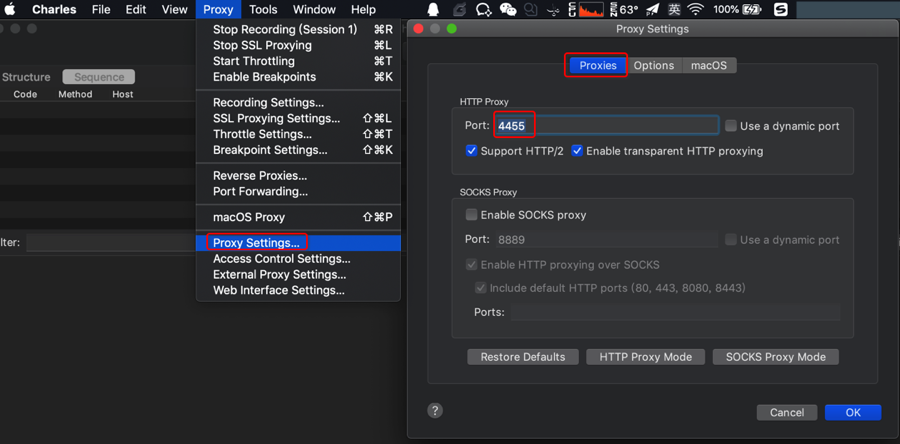
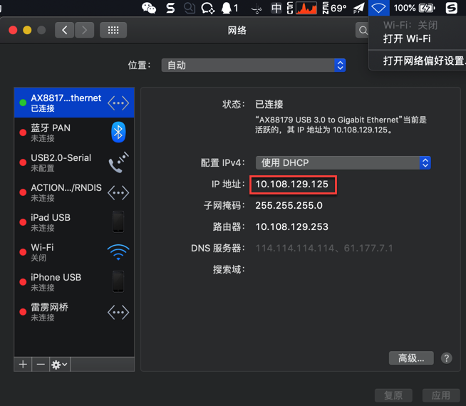
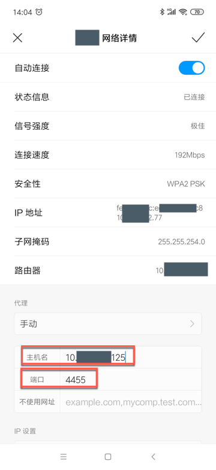
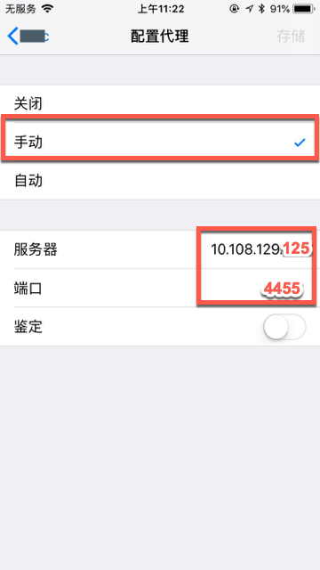
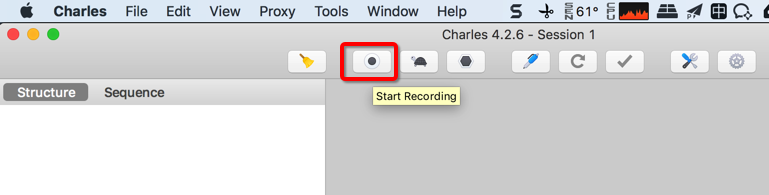
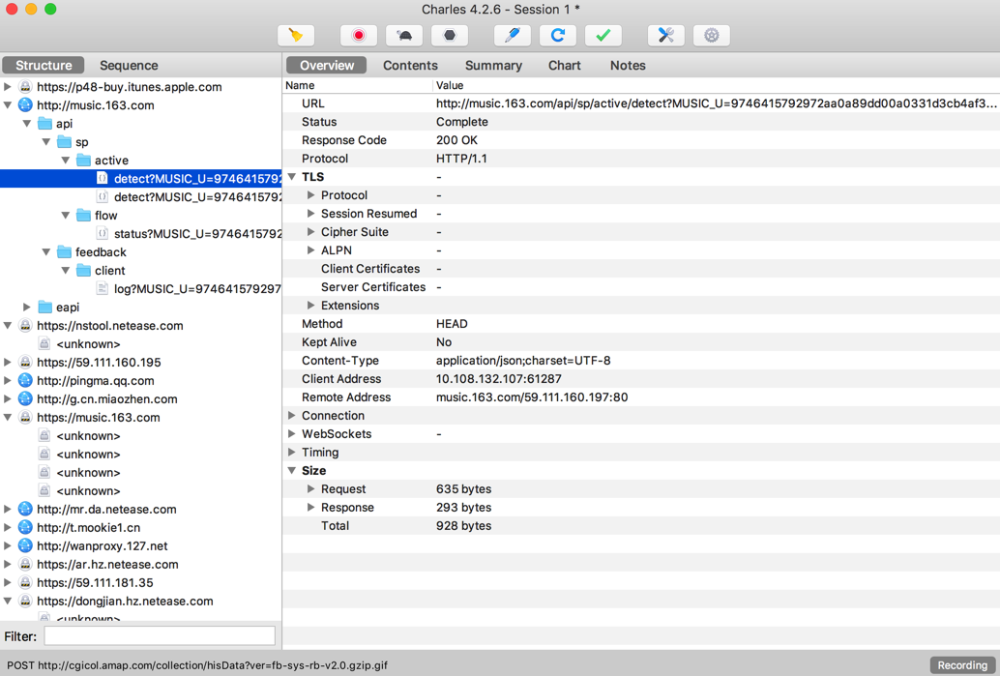

普通http请求
此处接着介绍，如何用Charles抓包app中普通的http的请求。
这个相对比较简单，不复杂。所以下面的相关配置也都是通用的。
核心逻辑：
- 电脑：
Mac或WindowsCharles中设置HTTP代理- 设置代理的端口
- 手机等移动端中设置
Charles的代理- WiFi中设置手动代理
- IP地址
- 端口
- WiFi中设置手动代理
下面详细解释如何操作：
用Charles抓包app中普通http包的流程
PC端设置Charles的HTTP代理
Proxy -> Proxy Settings -> Proxies -> HTTP Proxy

- Port：
4455- 默认是
8888- 可以改为自己想要的任意端口
- 默认是
- （默认已）勾选：
Support HTTP/2Enable transparent HTTP proxying
给移动端手机中设置WiFi代理为Charles
简答：
- 确保电脑和手机是同一个WiFi网络
- 注意：
- 电脑端（最好）是有线网络
- 手机端可以是
WiFi无线网
- 注意：
- 然后设置手机端Wifi代理为Charles所在电脑的IP和Charles的HTTP代理的端口
详解：
去给手机端设置WiFi代理为PC端的Charles
基本思路：
设置 -> 点击当前Wifi进入详情页 ->代理从无改为手动 -> 输入IP和端口
- 代理IP：Charles所在电脑的IP
- 此处的有线网络的IP是：
10.108.129.125- 
- 此处的有线网络的IP是：
- 代理端口：Charles中HTTP Proxy设置的端口
- 此处：
4455
- 此处：
举例：
- Android
- 
- iOS
- 
关于手机端设置Wifi代理的详细介绍，参见后续章节：移动端设置代理
Charl开启抓包
Charles中点击录制按钮：

手机中开始使用app
手机中打开和使用你的（要抓包的）app
比如用浏览器打开网页，打开和使用某个你要抓包的app（其内部会访问网络，调用服务器接口，获取数据等）
比如此处打开网易云音乐
Charles可以正常抓包
接着就可以用Charles愉快的抓包和分析http的请求了：
